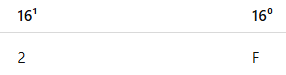

Conversion for Hexadecimal
Hexadecimal to Decimal
2F₁₆ to Decimal (Using Method 1: Division/Multiplication / Place Value)
Step 1: Understand the values
Hexadecimal uses base 16:
So: 2F₁₆ = (2 and 15)
Step 2: Write the place values (powers of 16)

Step 3: Multiply each by its place value
- 2 × 16¹ = 2 × 16 = 32
- 15 × 16⁰ = 15 × 1 = 15
Step 4: Add the results
32 + 15 = 47
Answer: 2F₁₆ = 47₁₀
Hexadecimal to Binary
2F₁₆ to Binary (Using Method 2: Substitution/Grouping)
Step 1: Convert each hexadecimal number to decimal
Step 2: Convert each to binary (4 bits each)
Convert 2 to binary
Use 8, 4, 2, 1:
- 2 < 8 → 0
- 2 < 4 → 0
- 2 ≥ 2 → 1 (remainder 0)
- 0 < 1 → 0
So: 2 = 0010₂
Convert 15 to binary
Use 8, 4, 2, 1:
- 15 ≥ 8 → 1 (rem 7)
- 7 ≥ 4 → 1 (rem 3)
- 3 ≥ 2 → 1 (rem 1)
- 1 ≥ 1 → 1 (rem 0)
So: 15 = 1111₂
Step 3: Combine the binary results
2 → 0010
F → 1111
Answer: 2F₁₆ = 00101111₂
Hexadecimal to Octal
2F₁₆ to Octal (Using Method 2: Binary Grouping / Substitution)
Step 1: Convert hexadecimal to binary (4 bits each)
Convert 2 to binary
Use 8, 4, 2, 1:
- 2 < 8 → 0
- 2 < 4 → 0
- 2 ≥ 2 → 1
- 2 ≥ 2 → 1
So: 2 = 0010₂
Convert F (15) to binary
Use 8, 4, 2, 1:
- 15 ≥ 8 → 1 (rem 7)
- 7 ≥ 4 → 1 (rem 3)
- 3 ≥ 2 → 1 (rem 1)
- 1 ≥ 1 → 1
So: F = 1111₂
Step 2: Combine the binary
0010 1111₂
Step 3: Group into 3 bits (for octal)
From right:
00101111 → 000 101 111 (add zeros in front)
Step 4: Convert each group to decimal
- 000 → 0
- 101 → 5 (4 + 1)
- 111 → 7 (4 + 2 + 1)
Step 5: Combine the result
Octal = 057₈ → usually written as 57₈
Answer: 2F₁₆ = 57₈
⬅ Octal